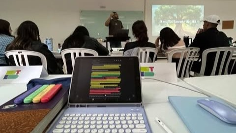
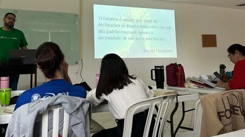
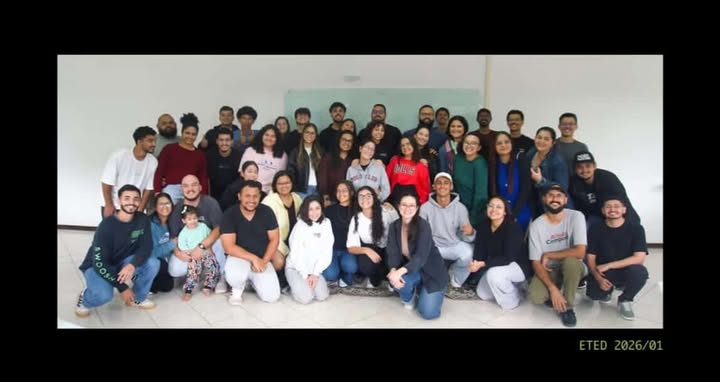

SEMANA 01
ETED
SUMÁRIO
| 1.AULA DA SEMANA | 4.RELACIONAMENTO |
| 2.CARÁTER DE DEUS | 5.MEDITAÇÃO |
| 3.MISSÕES | 6.AUTOAVALIAÇÃO |
AULA DA SEMANA
A IMPORTÂNCIA DA PALAVRA
MARKUS JOHANN
24/02 - 27/02
Nessa primeira semana de aula o Senhor falou comigo principalmente referente o quão necessário é que eu dependa de Sua palavra, pois é através dela que eu posso ouvir verdadeiramente a voz de Deus. Fui confrontado sobre a questão do guardar e meditar sobre o que Ele me falou durante o dia, pois por muita das vezes eu recebo um direcionamento, mas acabo esquecendo logo depois, o Senhor tratou em mim sobre a confiança em Sua palavra e em Sua voz, e me senti desafiado em estar em um lugar de intimidade, buscando estar mais sensível ao que Ele está me dizendo.
AQUELE QUE NÃO CONHECE A PALAVRA DE DEUS, É REFÉM DE QUEM DIZ QUE CONHECE.



CARÁTER DE DEUS
CARÁTER E NATUREZA DE DEUS
SOBERANIA E FIDELIDADE
Todos os dias foi nítido a Soberania de Deus sobre esse lugar, em todos os momentos Ele esteve com a sua face voltada para nós, foram dias onde me senti nos átrios do Senhor. Pude desfrutar da fidelidade de Deus através dos cumprimentos de palavras e também por meio das suas provisões em todos esses últimos dias.
DEUS É UM DEUS RELACIONALEm minha vida eu notei esses caráter de Deus através do ordinário, onde me senti constrangido pela Sua presença constante, e amparado pelo revelação da fidelidade através de Palavras ministradas nas aulas e direcionamentos compartilhados comigo através dos momentos de intimidade com o Senhor.
MISSÕES
O QUE DEUS TEM FEITO NAS NAÇÕES
Foi nos compartilhados em sala os novos locais de prático, Colombia e Ecuador. Como Colombia se encontra na posição 47 na LMP (Lista Mundial de Perseguisão) segundo as informações do canal PORTAS ABERTAS BRASIL, o Senhor me levou a interceder e orar por esse povo, pelo Caráter de Deus sobre essa nação e pela revelação da verdade do Evangelho a cada família e tribo presente nesse lugar.
RELACIONAMENTOS
PARTE DA FAMÍLIA
Aprendi muito com Deus referente a relacionamento nessa primeira semana, tive muitos contatos com diversas pessoas de outras regiões e culturas, onde pude conhecer um pouco da história de cada um, e entender como Deus vem trabalhando em todos os ambientes em nossa nação Brasileira. Um desafio foi sobre a convivência em comunidade, eu particularmente sempre me importei bastante com organização, e Deus tem me levado a compreender que nem todos enxergam igual a mim, e consequentemente isso trabalhou o meu ego, em querer ter o controle dos ambientes. Tem sido um tempo muito edificante, onde em todos os momentos o Deus se fez presente, tratando cada detalhe. Fiz amizades incríveis com alguns alunos, onde tive a impressão de já conhecê-los a um tempo, enxerguei compaixão e generosidade da vida de todos. Fui perfeitamente recebido na base pelos obreiros e moradores locais, onde pude me sentir parte da família.
Glorifico a Deus pela oportunidade de viver essa jornada!
MEDITAÇÃO
A PALAVRA VIVA
Que nos esforcemos para permanecer na fé, e busquemos não cometer o mesmo erro dos antepassados em desobedecer a ordem de Deus. A palavra de Deus é viva, eficaz e afiada, ela penetra a ponto de dividir alma e espírito e expor as intenções do coração, revelar a incredulidade escondida, julga pensamentos examinando e dando discernimento da verdade que passa pela mente; Deus vê o mais íntimo do ser, analisa o propósito de nosso coração, e olha para o verdadeiro sentimento e intenção que nos leva a pensamentos. É como espada de dois gumes, pois só a palavra é capaz de separar crenças, idolatrias e conhecimento de pessoas com o coração e a mente cativa a coisas que não provêm do Reino.
Pois a palavra de Deus é viva e eficaz, e mais afiada que qualquer espada de dois gumes;
ela penetra ao ponto de dividir alma e espírito, juntas e medulas, e julga os pensamentos e
intenções do
coração.
Hebreus 4:12
• A palavra penetra o mais profundo do meu ser.
AUTOAVALIAÇÃO
Minha Autoavaliação:
Foi uma semana onde pude olhar para mim e reconhecer a dependência do Senhor em minha vida, a cada dia desfrutei da presença de Deus clara sobre mim, e consequentemente me senti constrangido e alegre, por ter a convicção de que Ele está comigo. Foi uma semana tranquila de adaptação, onde me senti muito bem acolhido por todos, me sentindo em família. Agradeço imensamente a Deus pela oportunidade de ficar na casa, e também pelo cumprimento de umas da oração que fiz de ter amigos de quarto no mesmo caminho. Pude fazer amizade com muitas pessoas de diversos lugares, e tem sido muito especial viver esse momento onde tudo é novo. Sobre mim, acredito que foi uma semana de me reconhecer mesmo, para que nessa próxima eu venha a me permitir que o Senhor trate as coisas que Ele deseja tratar, estou muito feliz com a oportunidade de estar vivendo no centro da vontade dEle, e a cada dia mais quero permanecer segundo os Seus direcionamentos.
| Aspectos de Crescimento | Pontuação |
|---|---|
| Prestatividade | 5 |
| Gentileza | 5 |
| Organização Pessoal | 4 |
| Respeito ao Limite do Outro | 5 |
| Generosidade | 5 |
| Paciência | 4 |
| Honestidade | 5 |
| Amor | 5 |